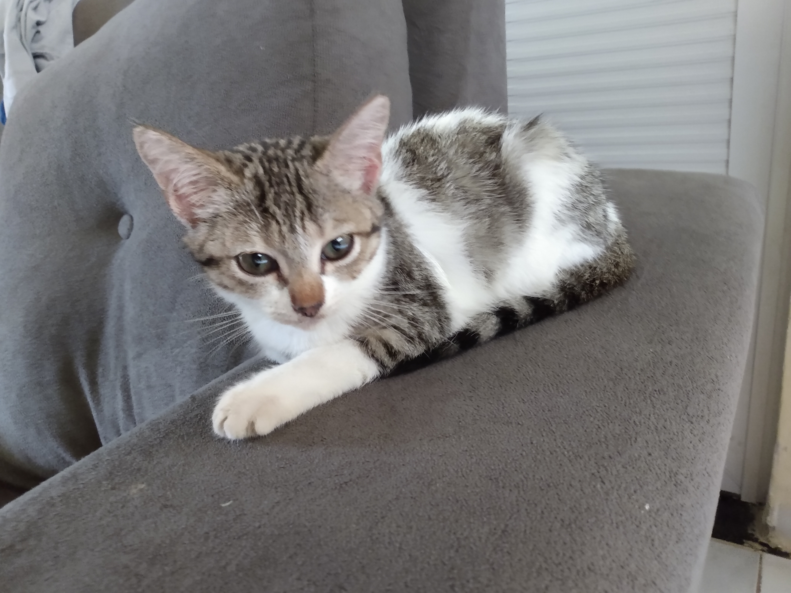

Foto do primeiro dia com a Gata Miu
- A gata miu apareceu em um dia chuvoso na porta da rua e miava muito.
- A gata miu era uma filhote com muita energia a disposição nesse mundo.
- A gata miu pulava e corria todas as noites por gostar muito de brincar, mas a gata miu corria durante o dia.
- A gata miu gostava de subir no muro e andar pelos telhados, mas a gata miu não era sozinha, ela tinha o Tim Spike.
- A gata miu também tinha um cadela de companhia, mas essa cachorra não será contada nessa página.
- A gata miu também tinha uma companhia de um marreco, mas esse marreco também não será contado.
- O Tim Spike é outro gato que não faz parte da história dessa página.
- A gata miu gostava muito de ração de peixe, mas ela gosta ainda mais de sachê de gato.
- A gata miu ainda não era castrada, estava esperando abrir vaga no programa de castração municipal.
- A gata miu, gostava de comer a ração do marreco e da cadela, mas a gata miu gostava de comer várias coisas.
- A gata miu, diferente do outro gato, gostava de se esfregar nas pernas das pessoas e miar.
- A gata miu ajudava o gato mais velho a se limpar.
- A gata miu brincava com a sombra, mas também com folhas e objetos que se moviam.
- A gata miu não era minha gata, mas era uma gata que era amigável.
- O Tim Spike não aceitava afagos, a gata miu pedia um bocado.
- A gata miu viveu menos de 1 ano, mas era conhecida como gatinha vrum vrum, por fazer um barulho similar.
- Não é verso, nem poema, não há rimas, apenas a história da Eterna Gatinha Miu.
- Veja algumas fotos da gatinha miu aqui.